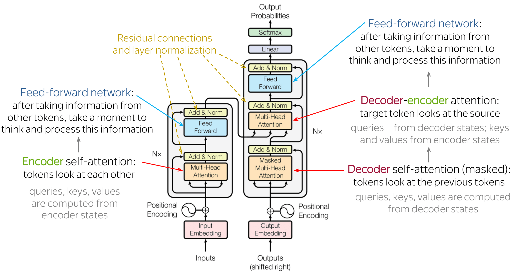

Transformers¶

Why Transformers¶

Context: RNNs were previously used
- had no long-range dependencies
- i.e. only look at a small amount of previous token, whereby in language, even a token at the start of the sentence can influence the last token in the sentence
- had sequential processing
- thus no parallelism
- Computational Efficiency
- Sequential Operations:
- Self-attention has constant
O(1)number of sequentially executed operations, while recurrent layer has number of operations linear to sequence lengthO(n) -
Complexity per layer:
-
in self-attention layer, each element attends to all other elements ⇒ \(O(n^2)\)
For each interactions, there is a matrix multiplication of dimension d (dimension of input vectors / embedding) ⇒ \(O(n^2)\)
-
in recurrent layer, operations mainly matrix muplication betrween input and hidden states (\(d^2\) complexity). This operation is executed for each element ⇒ \(O(n * d^2)\)
- WV∈Rdmodel×dvW_V \in \mathbb{R}^{d_{\text{model}} \times d_v}WV∈Rdmodel×dv
- As long as sequence length
nis smaller than dimension of input vectorsd, self-attention layers are faster than recurrent layers
-
- Self-attention has constant
- Sequential Operations:
How Transformers Work¶
1. Word embeddings¶

convert input / output to word embedding of dimension d
- Same weight matrices are used for embedding for both input and out tokens, and the pre-softmax linear transformation layer in the decoder
- This allows a learned shared set of paramteres for both token embeddings and ffinal token prediction step in the decoder.
2. Positional Encoding¶


RNNs process words sequentially, while transformers process all words at once ⇒ no in-built mechanism to consider word order.
Add positional encoding within the embeddings, so that transformer knows the position.
For token at position \(p\) and dimension \(i\):
Even dimensions:
Odd dimensions:
Typically add this vector to the token embedding:
Advantages:
- Unique encoding for each position
- All values are of values [-1, 1]
- Position encoding independent of N
3. Self-Attention and Multi-Head Attention¶


For each token in a sequence, we want to measure how relevant the token is to all other tokens in the same sequence, and place more importance of those that are relevant to capture contextual information.
Self-Attention: From Tokens to Queries, Keys, and Values (Q, K, V)¶
Assume:
- A sequence of
ntokens -
Model (embedding) dimension
d_model -
Token Embeddings
Each token is embedded into a vector of dimension d_model.
Stack the token embeddings into a matrix:
Each row of X corresponds to one token embedding.
- Learned Projection Matrices
The Transformer learns three linear projection matrices:
- Computing Queries, Keys, and Values
The projections are computed via matrix multiplication:
- Interpretation
- Each row of
Qis the query vector for a token - Each row of
Kis the key vector for a token - Each row of
Vis the value vector for a token
All three representations are derived from the same input matrix X, but via different learned projections.
- Intuition
- Queries represent what a token is looking for
- Keys represent what a token offers
- Values represent the information a token passes on
These are later combined using attention to determine how tokens interact.
- Self-Attention Computation
Attention Score: Each token’s query is compared against all keys using a scaled dot product.
Attention Weights: Row-wise softmax to convert scores into attention weights, where each row of A sums to 1 and represents how attention is distributed over all tokens.
Self-Attention Output / Head: Compute a weighted sum of value vector. Each output row is a context aware representation of a token.
Multi-Head Attention¶


Same as Self-Attention, but split subspaces of Q, K and V matrices into h smaller matrices instead of using 1 whole matrix for Q, K and V to get h heads.
Benefits of Multi-Head Attention:¶
- Parallelism as computation for each head is independent
- Each head specialises on different kind of relationships — note that this is an emergent behaviour.
- e.g. One head might focus on nearby words, while another on long-range links, and another on punctuation
- More expressive than having one attention pattern
- Can represent context as a mix of several distinct relationships / patterns
- Small overall cost
- Parameters after concatenating the heads together will still be the same
4. Residual Connection and Layer Normalisation¶
Residual Connection¶

This layer is the Add & Norm part
Residual connection is an arichtectural shorcut that allows information to flow through, by passing one or more layers of neural network computations.
This mechanism addresses the common issue of vanishing gradients in deep network. Gradients diminish as they propagate backward through numerous layers.
Hence, there will be smoother gradient flow ⇒ more effective training
Residual Connections help the network train better as the neural network contribute very little at initialisation and the unimpeded
Layer Normalisation (LN)¶
Each token’s hidden vector is normalised (z-score method), across features. This helps to stabilise training and make gradients/updates more consistent across layers
Post-LN (original Transformer):
Pre-LN (modern-day LLMs):
Pre-LN is more commonly used because gradient flow is simpler (i.e. lower chance of getting transformed to extreme values).
5. FFN¶

The normalised residual output is fed into a position-wise feed forward neural network, which are a couple of layers with ReLu activation. The FFN output has residual connection and LM again.
6. Cross-Attention¶

Self-attention occurs within the encoder and decoder itself, where tokens receive context of tokens in the same sequence.
Cross-attention occurs between the encoder and decoder, where the K and V matrices are from the encoder, while Q matrix comes from the decoder. Hence, cross-attention only occurs for encoder-decoder models.
Idea:¶
Encoder turns the input sequence into a set of rich representations (i.e. a set of token embeddings for each token — which will be used as a “memory”), while Decoder generates the output sequence (target) token-by-token, conditioned on the what it has generated so far (due to casual self-attention) and that Encoder’s “memory”.
Model at current token: “Given what I have generated so far, which parts of the source input matter right now?”
Cross-attention is exactly that lookup:
- Decoder states provide Queries (Q) —> “what do i need?”
- Q represents the current need based on what is has generated so far → “what am i looking for from the source to generate the next token given my current sequence / state ?”
- Encoder outputs provide Keys, Values (K, V) → “what source info is available”
- K = “how should you match to me?”
- V = “what information you get if you choose me”
7. Decoding Output¶

The decoder’s outputs are fed into a final linear transformation layer and softmax function to transform them into a probability distribution over the word vector space.
This probabiliy distribution represents the likelihood of each token being the next predicted token in the sequence.
Notes:¶
Encoder, Decoder and Encoder-Decoder¶
Encoder-Decoder has cross-attention, but only inside the decoder block, while Encoder only and Decoder only models do not have cross-attention, but only has self-attention and casual self-attention respectively.
Mental Model:
Encoder-only = encoder-decoder minus decoder minus cross-attention
Decoder-only = encoder-decoder minus encoder minus cross-attention
Inference¶
Models usually have L transformer blocks. Hence, the attention + FFN part runs L times for a single forward pass.
For next-token prediction:
- Sequence is passed through all layers once → get logits for the next token
- Sample / choose the next token
- Append it and run another forward pass
Training¶
- initialise random weights
- Take a batch of sequences
- Forward pass through all blocks → logits for each position
- Compute loss (usually cross-entropy)
- Back-propagation to get gradients
- Update weights
- Repeat till max epochs / validation stops improving.
References:¶
- https://arxiv.org/pdf/1706.03762
- https://huggingface.co/blog/Esmail-AGumaan/attention-is-all-you-need
- https://aiml.com/explain-the-need-for-positional-encoding-in-transformer-models/
- https://stats.stackexchange.com/questions/565196/why-are-residual-connections-needed-in-transformer-architectures
- https://www.baeldung.com/cs/transformer-networks-residual-connections